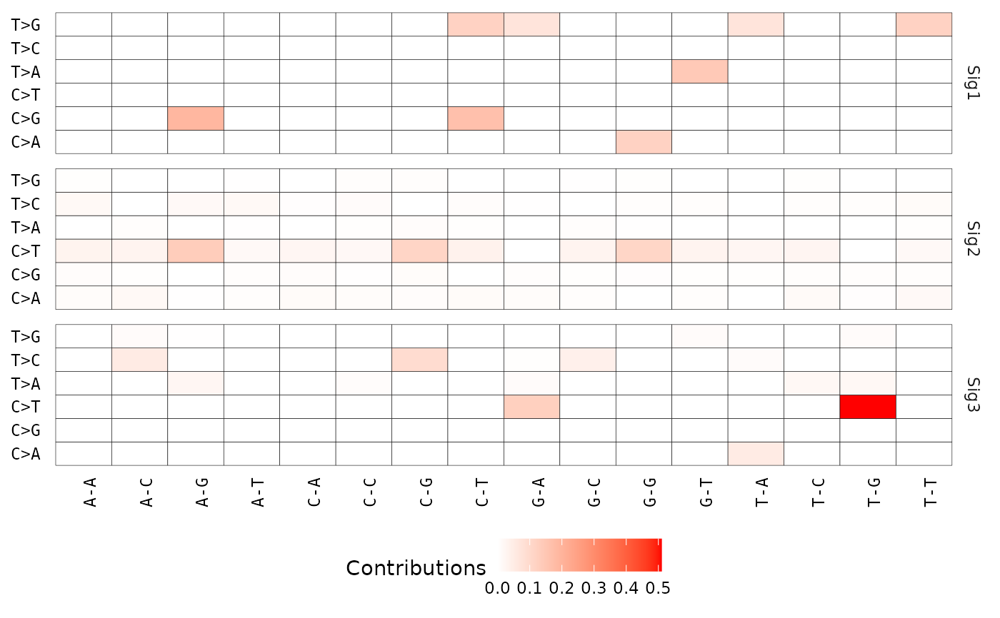

R/show_sig_profile_heatmap.R
show_sig_profile_heatmap.RdThis is a complementary function to show_sig_profile(), it is used for visualizing
some big signatures, i.e. SBS-1536, not all signatures are supported. See details for
current supported signatures.
show_sig_profile_heatmap(
Signature,
mode = c("SBS", "DBS"),
normalize = c("row", "column", "raw"),
filters = NULL,
x_lab = NULL,
y_lab = NULL,
legend_name = "auto",
palette = "red",
x_label_angle = 90,
x_label_vjust = 1,
x_label_hjust = 0.5,
y_label_angle = 0,
y_label_vjust = 0.5,
y_label_hjust = 1,
flip_xy = FALSE,
sig_names = NULL,
sig_orders = NULL,
check_sig_names = TRUE
)a Signature object obtained either from sig_extract or sig_auto_extract,
or just a raw signature matrix with row representing components (motifs) and column
representing signatures (column names must start with 'Sig').
one of "SBS" and "DBS".
one of 'row', 'column', 'raw' and "feature", for row normalization (signature), column normalization (component), raw data, row normalization by feature, respectively. Of note, 'feature' only works when the mode is 'copynumber'.
a pattern used to select components to plot.
x label.
y label.
name of figure legend.
color for value.
angle for x axis text.
vjust for x axis text.
hjust for x axis text.
angle for y axis text.
vjust for y axis text.
hjust for y axis text.
if TRUE, flip x axis and y axis.
subset signatures or set name of signatures, can be a character vector.
Default is NULL, prefix 'Sig' plus number is used.
set order of signatures, can be a character vector.
Default is NULL, the signatures are ordered by alphabetical order.
If an integer vector set, only specified signatures are plotted.
if TRUE, check signature names when input is
a matrix, i.e., all signatures (colnames) must start with 'Sig'.
a ggplot object.
Support:
SBS-24
SBS-96
SBS-384
SBS-1536
SBS-6144
DBS-78
DBS-186
# \donttest{
# Load SBS signature
load(system.file("extdata", "toy_mutational_signature.RData",
package = "sigminer", mustWork = TRUE
))
# Show signature profile
p1 <- show_sig_profile_heatmap(sig2, mode = "SBS")
p1

# }